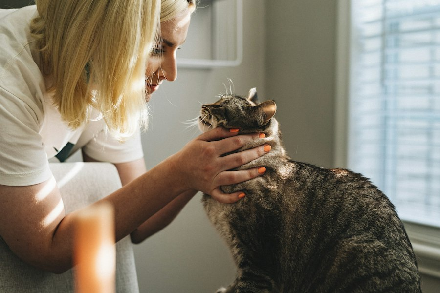

01
Animal Rescue
Helping animals in dangerous or difficult situations by promoting their safety, protection and welfare.
Make an Enquiry →Animal welfare involves more than providing shelter. It includes protecting animals from cruelty, supporting responsible ownership and promoting healthier lives for animals.
Helping animals in dangerous or difficult situations by promoting their safety, protection and welfare.
Make an Enquiry →
Promoting animal health through veterinary attention, preventative care and responsible treatment.
Make an Enquiry →
Encouraging responsible adoption and helping animals find caring families and permanent homes.
Meet the Animals →
Raising awareness about animal cruelty, neglect and the importance of protecting vulnerable animals.
Get Involved →
Educating communities about responsible pet ownership, animal welfare and compassionate treatment.
Learn More →
Encouraging proper nutrition, clean water, safe shelter, exercise and regular animal healthcare.
Ask a Question →